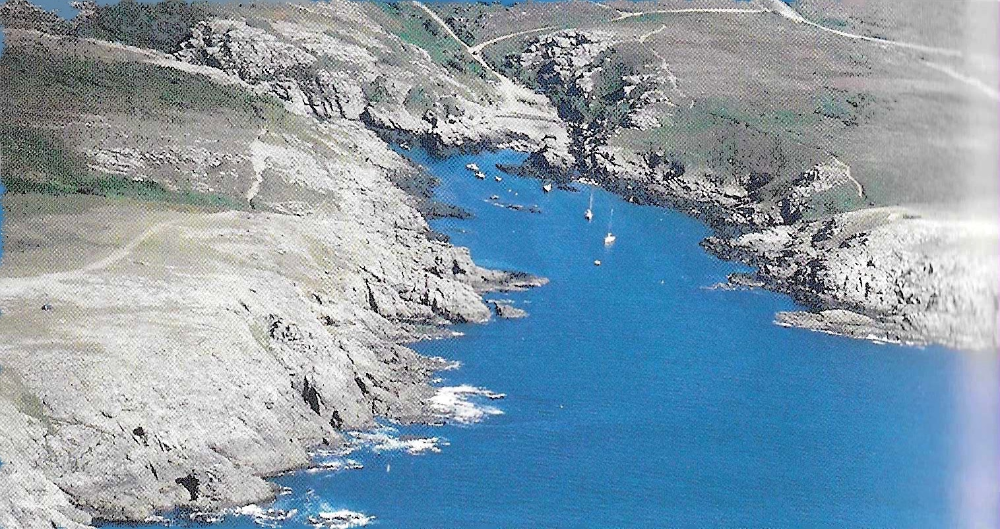

Port St Nicolas, Groix
Extrait du "Pilote Côtier, 5A"

Cette anse est située à environ 0,4 mille dans l'Est d'une pyramide blanchie érigée au bord de la falaise. On se présente exactement dans son axe
pour parer les roches qui affleurent le long des deux rives, tout en se dirigeant sur le rocher de la Vache, haut de 9 mètres.
Il faut prendre garde à une roche (2 mètres) à peine couverte à mi-marée, qui pointe dans le milieu de l'anse.
On mouillera de préférence du côté Est. Quelques barques sont mouillées au Nord du rocher de la Vache. L'anse St Nicolas
se partage en deux branches. On peut débarquer sur la grève de galets de celle de l'Est, mais si on veut échouer, il convient de le faire dans
celle du Nord nomée Port Kerlad. Son fond de sable dur y est plus propice.
Port St Nicolas est un mouillage de beau temps. La moindre houle le rend intenable. Il faut donc être sûr de la météo avant de se décider à y passer la nuit,
d'autant qu'en saison il est assez fréquenté et que l'on risque fort de devoir mouiller à l'extérieur, encore plus exposé.
© Passe-Coque, 2025